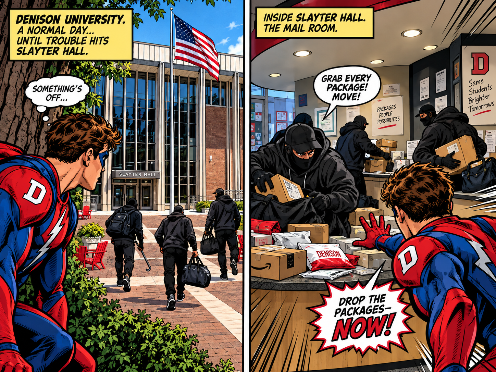
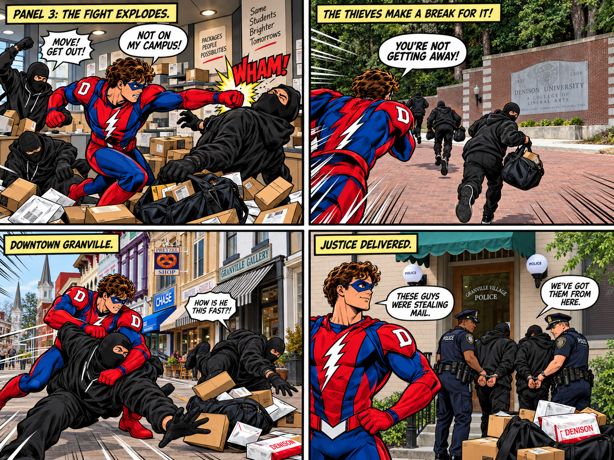

Make 3 — Campus superhero comic


Comic transcript and scene descriptions
- Outside Slayter Hall, a red-and-blue superhero watches masked thieves approach. Caption: “Denison University. A normal day… until trouble hits Slayter Hall.” Thought: “Something’s off…”
- Inside the mailroom, masked thieves collect packages. Caption: “Inside Slayter Hall. The mail room.” Thief: “Grab every package! Move!” Hero: “Drop the packages—NOW!”
- The superhero punches a thief among scattered packages. Caption: “Panel 3: The fight explodes.” Thief: “Move! Get out!” Hero: “Not on my campus!” Sound effect: “WHAM!”
- The thieves run past the campus entrance with bags. Caption: “The thieves make a break for it!” Hero: “You’re not getting away!”
- The superhero catches the thieves on a downtown street. Caption: “Downtown Granville.” Thief: “How is he this fast?!”
- Police take custody of the thieves outside the Granville police station. Caption: “Justice delivered.” Hero: “These guys were stealing mail.” Officer: “We’ve got them from here.”
Write-up
For this assignment, I used AI to make a comic based on a superhero trying to stop robbers from taking packages from the mailroom of Slayter. In order for me to have the most control with the A.I, I gave a prompt to the A.I for the first two panels and then told it to stop so I could intervene myself and customize it for the next panels. I gave reference photos to the AI of the locations around campus in order for the settings to look as accurate to real life. I gave the A.I images of Slayter, the mailroom, the campus entrance, downtown Granville, and then the police station. On my first attempt, I did not use reference images, and it seemed to make up what the setting of the comic was. I think that, because of my constant intervention with the A.I., the images came out how I wanted them to, and the A.I did not give random outputs. I gave the A.I the exact storyline to follow and all of the places I wanted the story to take place in.